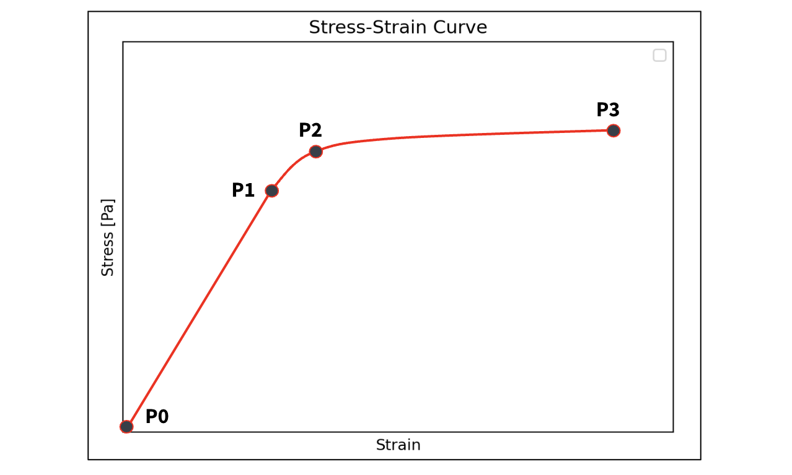
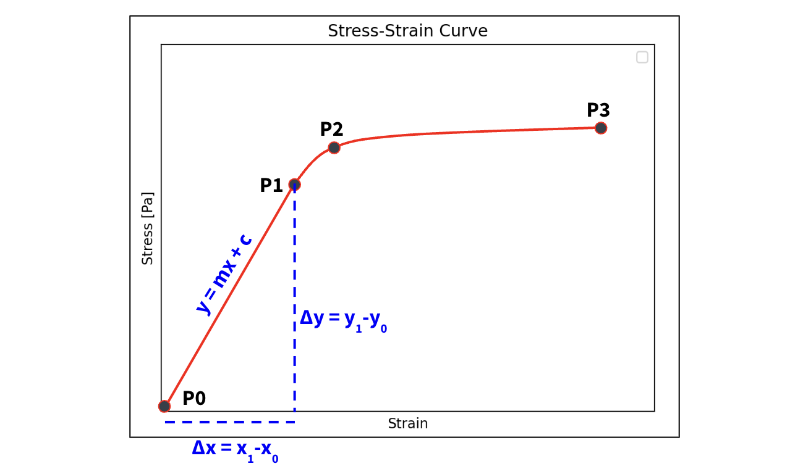
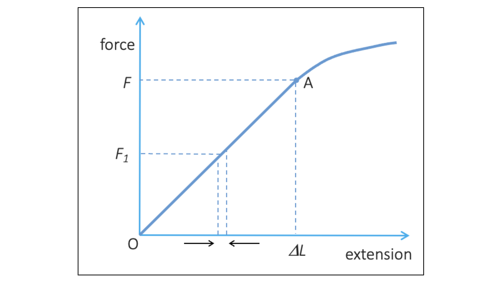
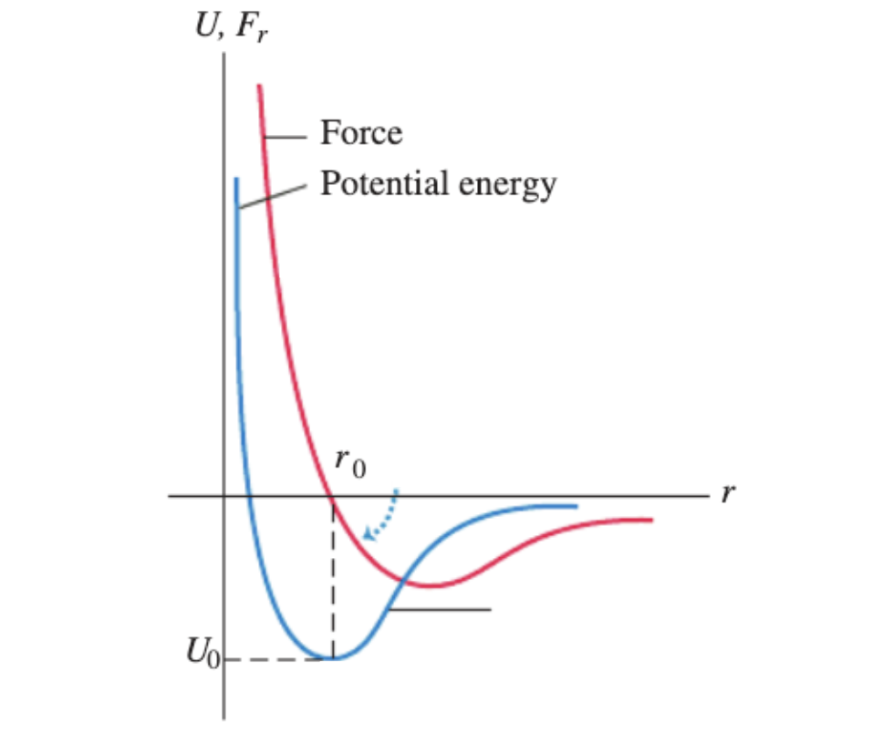
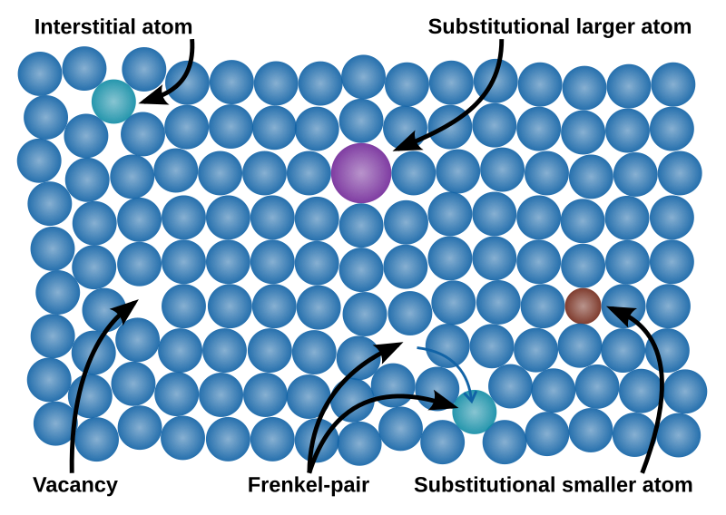
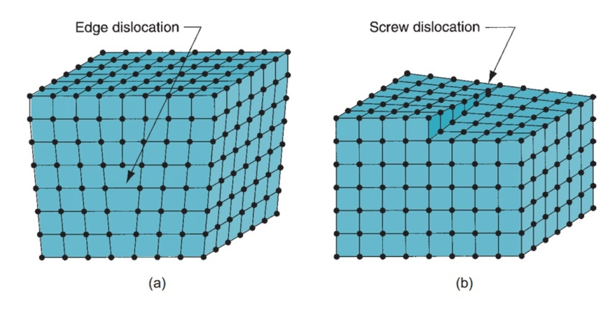

Lecture 9: Hookes Law#
Learning Objectives#
By the end of this lecture you should:
Be able to define elastic and plastic deformation.
Be able to draw an annotated stress/strain curve.
Be able to calculate the Young modulus of various materials and use this in further calculations.
Be able to calculate the energy stored in a material under stress.
Be able to calculate the speed of sound in different materials.
Elastic and Plastic Deformation#
If we apply a force to a material and this changes its size, if we remove the force and the object returns to its original size, we say that it is behaving elastically. It has been elastically deformed. An easy example to remember this is to consider an “elastic material” such as a rubber band. If we stretch it and let go, it will return to its original shape.
On the flip side, if we remove the force acting on an object and it does not return to its original shape, we say that it is behaving plastically. It has been plastically deformed.
A material does not have to behave either elastically or plastically, it may depend on the load that is applied. Under moderate strains (small changes in length) a metal may return to its original shape, but under large strains (large changes in length) the meterial will not.
This behaviour can be determined by looking at stress-strain curves as you will see shortly. We are going to consider how a spring may behaves as we apply different amounts of tensile force to it, which nicely leads us onto Hooke’s Law.
Hooke’s Law#
The Hooke’s law experiment is a classic physics classroom experiment as all you need to perform it is a spring and some masses. In the experiment you secure the spring vertically to a clamp stand, measure its initial length, add a mass (\(f = ma\)), which intuitively will cause the spring to stretch and its length to increase. By measuring the new length the extension of the spring can be determined.
Naturally if more masses are added, the force acting on the spring increases as does the magnitude of the extenion. Therefore the extension is proportional to the force applied to the spring. - This is Hooke’s law, and it can be expressed mathematically as:
\( F \propto \Delta x. \)
When we have a linearly proportional relationship, naturally we introduce a constant of proportionality, \(k\), which in this case is the spring constant:
\( F = k \Delta x \)
Hooke’s law does not only apply to springs and can apply to other elastically deformable materials. If we look at the form of this equation we notice that it is a linear relationship. However, in the spring extension experiment one will find that as masses keep being added, the extension of the material does not continue to occur linearly. This Hooke’s law can only describe a system when it is behaving linearly.
Hookes law relates force to extension. In the last lecture we introduced the concepts of stress and strain, which themselves can be written in terms of force and extension respectively:
\( \sigma = \frac{F}{A} \to F = \sigma A, \)
and
\( \epsilon = \frac{\Delta L}{L_0} \to \Delta L = \epsilon L_0,\)
as such Hooke’s law can be expressed in terms of stress and strain:
\( F = k \Delta L \to \sigma A = k \epsilon L_0, \)
which can be rearranged to make strain the subject:
\(\sigma = \frac{k L_0}{A}\epsilon, \)
Therefore for Hooke’s law to be valid stress must be proportional strain! The constant of proportionality is equal to \(\frac{kL_0}{A}\). Lets see what this looks like for a material on a stress strain plot.
Stress-Strain Plot#

The plot above illustrates an example stress-strain plot for a given material:
Between points 0 and 1 we can see that as the strain (force applied) increases, the stress also increases linearly. Hooke’s law applies between these two points. Point 1 is referred to as the limit of proportionality. At any point along this line, if we were to remove the load (strain) the object would return to its original length. The material is therefore being elastically (reversibly) deformed and behaving elastically.
Between points 1 and 2, Hooke’s law no longer applies as the stress and strain are not linearly proportional, but the material is still being elastically deformed. As such, if the strain is removed, the material will still return to its original shape despite Hooke’s law not applying beyond the limit of proportionality.
Beyond this point, if more strain is applied the material will no longer undergo elastic deformation and instead begin to deform plastically. If the load is removed, the material will not return to its original length and instead has been permanently deformed. Point 2 is therefore called the elastic limit (or yield point).
Between points 2 and 3* is known as the region of plastic deformation, which is characterised by a small increase in stress for a given amount of strain (for a small amount of additional force, the length of the material will increase dramatically.)
Point 3 represents the fracture point or the point at which the material will break/snap. The fracture point for brittle and ductile materials occurs at different points. If a material is ductile it will be capable of undergoing a large amount of plastic deformation before breaking, whereas if it is brittle, the fracture point will occur much nearer the elastic limit.
Youngs Modulus#
Referring back to the region of proportionality, a useful material characteristic to be aware of is the Youngs modulus of a material. Simply put this is the ratio of stress to strain, and this may be determined from the gradient of the linear proportion of the stress strain graph, which can be modelled as \(y=mx+c\) format, where the value of the intercept, \(c\) is \(0\). Therefore the gradient of the line of best fit, the youngs modulus, \(E\), is simply equal to:
\(\sigma = E \epsilon, \)
\( \frac{F}{A} = E \frac{\Delta L}{L_0}, \)
\( E = \frac{F L_0}{A \Delta L}.\)
From the equation above, we can see that the unit of length cancel on the top and bottom of the equation, and as such the Youngs modulus has units of N\(\,\)m\(^{-2}\) or Pascal (Pa). It should be noted that the Youngs modulus of a material is typically in the GPa range (\(\times 10^9\,\)Pa).

The Youngs moduli of various materials is proved below:
Material |
E (GPa) |
|---|---|
Steel |
200 |
Aluminium |
70 |
Titanium Alloy |
120 |
Carbon Nanotube |
1000 |
Nylon |
3 |
Pine Wood |
9 |
Rubber |
0.1 |
Glass |
75 |
Energy Stored in Tensile Strain#
As this is a physics topic, we are also interested in energy. If we want to change the length of an object, either by compression or extension, we must do work on the object. In effect we are storing energy in the material by compressing it or stretching it. If we recall that the work done is simply defined as:
\(W = F \Delta s\),
we can easily modify this equation to be applicable with the system that we are modelling:
\(W = F \Delta L.\)
These expressions are dimensionally consistent as displacement and extension have the same units. Therefore if we want to calculate the work done in extending an object, we can do so by determining the area under the curve in a force extension plot as the area underneath corresponds to the product of the force and extension. This could be done via integration for the entire curve (adding all the tiny contributions together, but for the linear region can be determined just using:
\(W = \frac{1}{2} F \Delta L,\)
which is the area of a triangle.

Intuitively this makes sense, if we have a material and we deform it in the elastic region, it will want to return to its original shape, therefore it must have elastic potential energy! Finally, we are going to look at the microscopic properties of materials under stress and strain by considering the intermolecular forces.
Intermolecular Force Revisited#

Let us consider what is actually happening on a microscopic level when we apply a tensile stress to a material. When we stretch a material we are in effect increasing the separation distance between constituent molecules/atoms. As the length of the material increases linearly with the added stress, we may assume that the same relationship holds on the microscopic level. For example, looking at this force vs molecular separation plot we can see that around small deviations from \(r_0\) we may approximate the curve to be linear. This means that if they behave consistently, we would be able to make predictions about the macroscopic properties of a material based on its microscopic structure. What we actually find is that the fracture points of materials tend to be much lower that what would be predicted by extrapolating from the microscopic force plot. The reason for this is that these materials will not have perfectly crystalline structures, and instead will contain defects that introduce weak points that lead to breaks at much lower levels of stress. These defects can include:
Substitution impurities: a different atom/molecule occupies one of the lattice points.
Vacancies: an atom is missing from a lattice point.
Interstitial atoms: an atom (of the same or different type) is lodged between lattice points.
Frenkel defect: an atom leaves its place in the lattice creating a vaccency and then becomes an interstital atom at another point in the crystal.

Edge dislocations: an additional atomic plane is introduced in between other lattice planes.
Screw dislocations: one part of the lattice is simply displaced by another point.

The first defect figure above was taken from Wikimedia and the second from Facts.net.
{kind=link}
Speed of Sound in a Material#
As a final segue into the next unit of this course, Oscillations and Waves, we can relate the Young’s modulus of a material to the speed at which a sound wave will propagate through it. To do this we must know the density of the material.
As you are going to learn in the next unit, sound is a longitudinal wave which is characterised by the compression and rarefaction of the atoms or molecules in the material through which it propagates. Essentially, the atoms vibrate back and forth, which results in regions of higher and lower pressure. The actual particles do not move along the medium, but the regions of compression and rarefaction do which results in the propagation of the wave as we can seen in the gif below:

The speed of the wave, \(c\), can be calculated as:
\( c = \sqrt{\frac{E}{\rho}}, \)
where \(E\) is the Youngs modulus of the material, and \(\rho\) is the density of the material. The speed of sound is much greater in most solids than it is in air (\(c = 340\,\)m\(\,\)s\(^{-1}\)).
In the next unit, you will learn more about both longitudinal and transverse waves.
Questions#
Warning
Atempt the questions before looking at the solutions otherwise you will not learn!
Students who look at mark schemes without going through the motions of a question often think “yes, that’s what I would have done”, but are then unable to perfom on exams as the knowledge was never consolidated through practise.
Note
Units have been omitted in calculations below for simplicity. Ensure you know what each value represents.
Question 1#
A cylindrical steel wire has a diameter of \(0.500\,\)mm and a length of \(2.00\,\)m and a mass of \(3.10\,\)g. The wire is fixed vertically and has an extension of \(2.50\,\)mm when it supports a load of \(3.50\,\)kg.
a) Calculate the stress of the wire.
b) Calculate the strain on the wire.
c) Calculate the Young’s Modulus of the wire.
d) Calculate the energy stored in the stretched wire.
e) Calculate the speed of sound in the wire.
Q1a Solution
To calculate the stress of the wire we will use the stress equation:
\(\sigma = \frac{F}{A},\)
where the force is simply equal to the weight, \(mg\), and the area is simply equal to the cross sectional area of a cylinder:
\(\sigma = \frac{mg}{\pi r^2},\)
\(\sigma = \frac{mg}{\pi \left(\frac{d}{2}\right)^2},\)
\(\sigma = \frac{3.5 \times 9.81}{\pi \left(\frac{0.5 \times 10^{-3}}{2}\right)^2},\)
\(\sigma = 0.175 \times 10^9\, \text{Pa},\)
\(\sigma = 0.175\, \text{GPa}.\)
Q1b Solution
The strain on the wire can be calculated using the strain equation:
\(\epsilon = \frac{\Delta L}{L_0},\)
\(\epsilon = \frac{2.5 \times 10^{-3}}{2},\)
\(\epsilon = 1.25 \times10^{-3}.\)
Q1c Solution
The Youngs modulus of the wire can be easily calculated using the stress and strain:
\(E = \frac{\sigma}{\epsilon},\)
\( E = \frac{0.175\, \text{GPa}}{1.25 \times10^{-3}},\)
\( E = 140 \times 10^9\, \text{Pa},\)
\( E = 140\, \text{GPa}.\)
Q1d Solution
To determine the energy stored in the wire we are simply calculating the area under the linear section of the plot stress-strain, thus:
\(E = \frac{1}{2}F\Delta L,\)
\(E = \frac{1}{2}mg\Delta L,\)
\(E = \frac{1}{2}\cdot 3.5\cdot 9.81 \cdot 2.5\times 10^{-3},\)
\(E = 0.0429 \, J\)
Q1e Solution
To solve this we need to determine the density of the material from the mass, cross sectional area and volume:
\(V = \pi r^2 L = \pi \left(\frac{d}{2}\right)^2 L \)
\(\rho = \frac{M}{V} = \frac{M}{\pi \left(\frac{d}{2}\right)^2 L)} \)
The speed of sound in the material is simply given by:
\( c = \sqrt{\frac{E}{\rho}}, \)
\( c = \sqrt{\frac{E}{\left(\frac{M}{\pi \left(\frac{d}{2}\right)^2 L)}\right)}}, \)
\( c = \sqrt{\frac{140 \times 10^9}{\left(\frac{0.031}{\pi \left(\frac{0.5\times 10^{-3}}{2}\right)^2 \cdot 2)}\right)}}, \)
\( c = 4210 \,\text{m}\,\text{s}^{-1}.\)